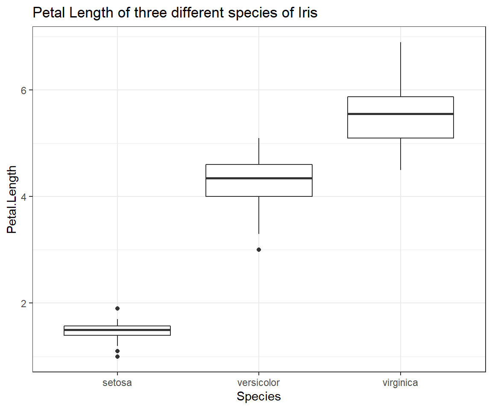
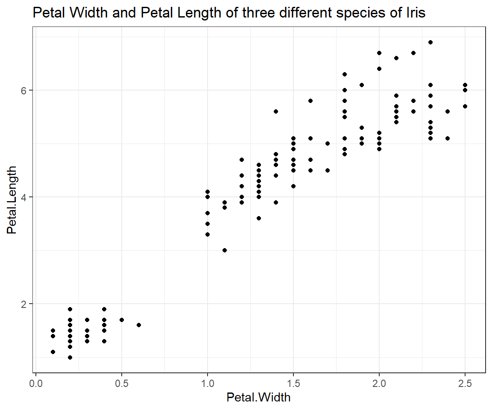
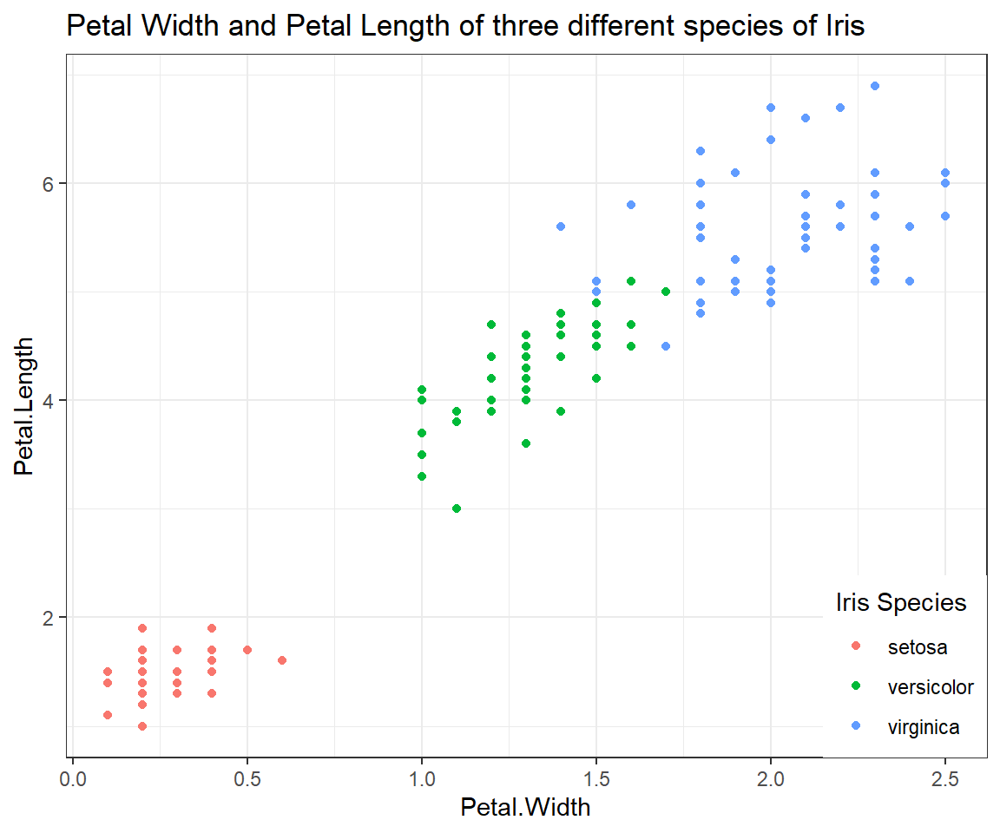
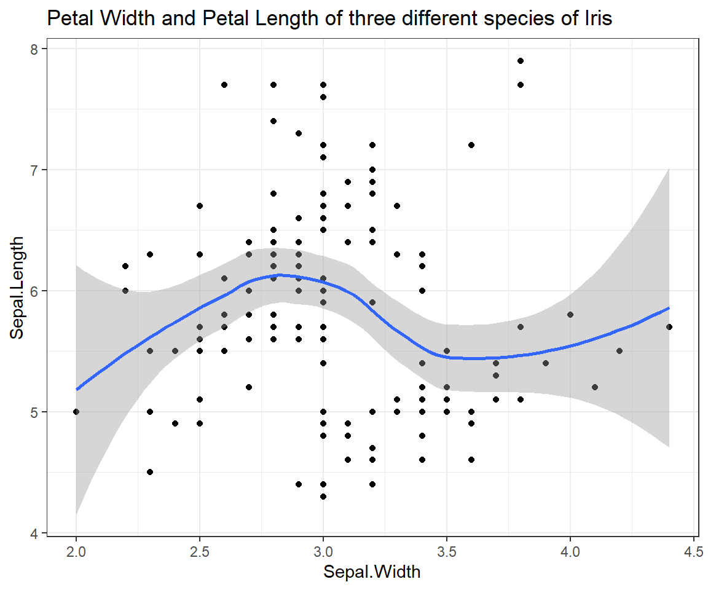
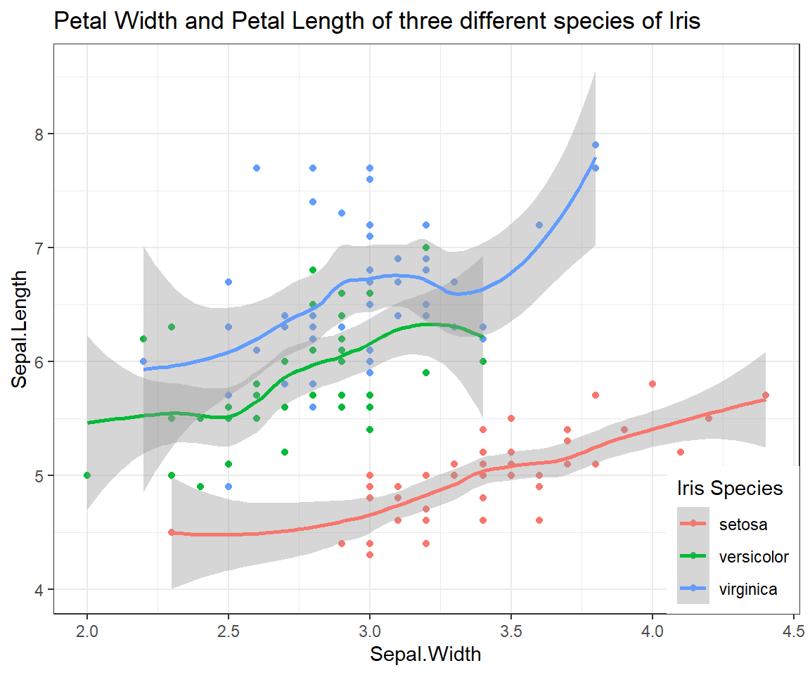

Data Visualisation
Theory
These are the solutions to the exercises contained within the handout to Data Visualisation which walks you through the basics of data visualisation in Rusing ggplot2. The plots presented here are using data from the iris data set supplied through the datasets package. Keep in mind that there is probably a myriad of other ways to reach the same conclusions as presented in these solutions.
I have prepared some Lecture Slides for this session.
Data
This practical makes use of R-internal data so you don’t need to download anything extra today.
Packages
Recall the exercise that went along with the last seminar (Descriptive Statistics) where we learnt the difference between a basic and advanced preamble for package loading in R. Here (and in future exercises) I will only supply you with the advanced version of the preamble.
Now let’s load the ggplot2 package into our R session so we’ll be able to use its functionality for data visualisation as well as the datasets package to get the iris data set.
# function to load packages and install them if they haven't been installed yet
install.load.package <- function(x) {
if (!require(x, character.only = TRUE))
install.packages(x)
require(x, character.only = TRUE)
}
# packages to load/install if necessary
package_vec <- c("ggplot2", "datasets")
# applying function install.load.package to all packages specified in package_vec
sapply(package_vec, install.load.package)
## Loading required package: ggplot2
## ggplot2 datasets
## TRUE TRUE
Loading R-internal data sets (iris)
The iris data set is included in the datasets package in R. An R-internal data set is loaded through the command data(). Take note that you do not have to assign this command’s output to a new object (via <-). Instead, the dataset is loaded to your current environment by its name (iris, in this case). Keep in mind that this can override objects of the same name that are already present in your current session of R.
data("iris")
Inspect the data set
Since we know that iris is a dataset, we can be reasonably sure that this object will be complex enough to warrant using the str() function for inspection:
str(iris)
## 'data.frame': 150 obs. of 5 variables:
## $ Sepal.Length: num 5.1 4.9 4.7 4.6 5 5.4 4.6 5 4.4 4.9 ...
## $ Sepal.Width : num 3.5 3 3.2 3.1 3.6 3.9 3.4 3.4 2.9 3.1 ...
## $ Petal.Length: num 1.4 1.4 1.3 1.5 1.4 1.7 1.4 1.5 1.4 1.5 ...
## $ Petal.Width : num 0.2 0.2 0.2 0.2 0.2 0.4 0.3 0.2 0.2 0.1 ...
## $ Species : Factor w/ 3 levels "setosa","versicolor",..: 1 1 1 1 1 1 1 1 1 1 ...
The iris dataset contains four measurements (Sepal.Length, Sepal.Width, Petal.Length, Petal.Width) for 150 flowers representing three species of iris (Iris setosa, versicolor and virginica).
Boxplot of Petal.Length by Species
ggplot(iris, # the data set
aes(x=Species, y=Petal.Length) # aesthetics
) + geom_boxplot() + # this is the end of the bare minimum plot
theme_bw() + labs(title="Petal Length of three different species of Iris")

THis boxplot shows us exactly how the distributions of petal length measurements of our three species of Iris are differing from one another. Despite the obvious trend in the data, be sure not to report results through figures alone! We will find out how to test whether the pattern we can observe here holds up to scrutiny at a later point in time of our seminars.
Scatterplot of Petal.Length and Petal.Width
ggplot(iris, # the data set
aes(x=Petal.Width, y=Petal.Length) # aesthetics
) + geom_point() + # this is the end of the bare minimum plot
theme_bw() + labs(title="Petal Width and Petal Length of three different species of Iris")

Scatterplot of Petal.Length and Petal.Width grouped by Species
ggplot(iris, # the data set
aes(x=Petal.Width, y=Petal.Length, colour = Species) # aesthetics
) + geom_point() + # this is the end of the bare minimum plot
theme_bw() + labs(title="Petal Width and Petal Length of three different species of Iris") +
theme(legend.justification=c(1,0), legend.position=c(1,0)) + # legend inside
scale_color_discrete(name="Iris Species") # Change legend title

Relationship of Sepal.Length and Sepal.Width
ggplot(iris, # the data set
aes(x=Sepal.Width, y=Sepal.Length) # aesthetics
) + geom_point() + geom_smooth() + # this is the end of the bare minimum plot
theme_bw() + labs(title="Petal Width and Petal Length of three different species of Iris")
## `geom_smooth()` using method = 'loess' and formula 'y ~ x'

Relationship of Sepal.Length and Sepal.Width (grouped by Species)
ggplot(iris, # the data set
aes(x=Sepal.Width, y=Sepal.Length, colour = Species) # aesthetics
) + geom_point() + geom_smooth() + # this is the end of the bare minimum plot
theme_bw() + labs(title="Petal Width and Petal Length of three different species of Iris") +
theme(legend.justification=c(1,0), legend.position=c(1,0)) + # legend inside
scale_color_discrete(name="Iris Species") # Change legend title
## `geom_smooth()` using method = 'loess' and formula 'y ~ x'
